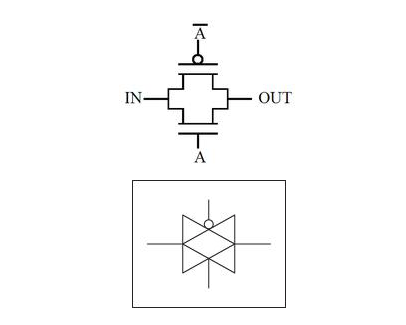

Transmission gates are used in digital circuits to pass or block particular signal from the components. In
transmission gates, NMOS and PMOS are parallel connected to each other. Schematic representation of transmission
gate and its circuit symbol are shown below.

In the transmission gates the input to the gate acts as the controlling input and depending on the value of
control variable, the input at the source end of transistor appears at the drain end or in other words the
control variable controls a transmission gate to which pass variables are applied. In figure shown above A
is the control signal.
Pass transistor logic is an efficient alternative to Complementary CMOS logic design because of following reasons:
Multiplexer or MUX, which is also known as data selector, is a combinational circuit with multiple input and
single output. At a time a single input is selected and given as output based on select signal.
A multiplexer selects binary information present on any one on the input line, depending upon logic status of
the selection inputs and routes to the output line. If there are n selection line then number of possible
routes input lines is 2^n and then multiplexer is referred as a 2^n x 1 multiplexer.
As we already know NMOS permits flow of current from source to drain when the input to the gate is 1
therefore when control variable is equal to 1 the input at the source end appears on the drain.